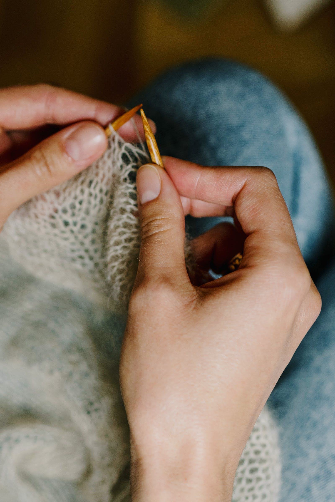
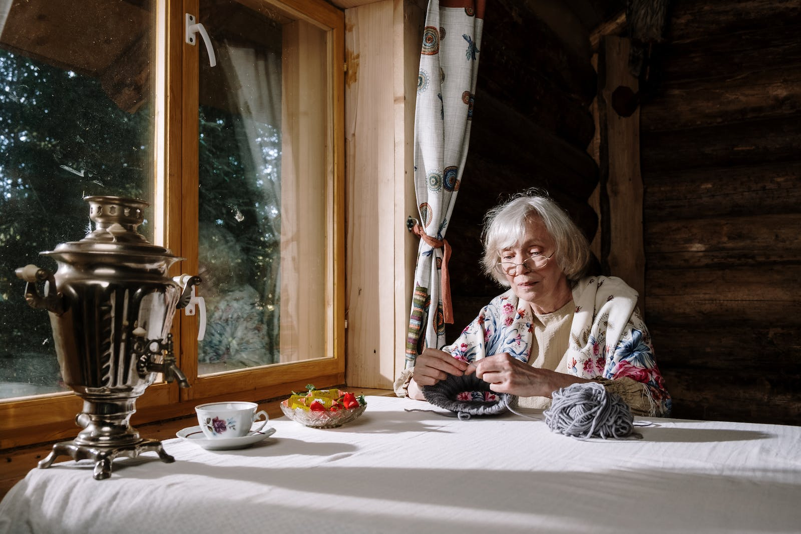
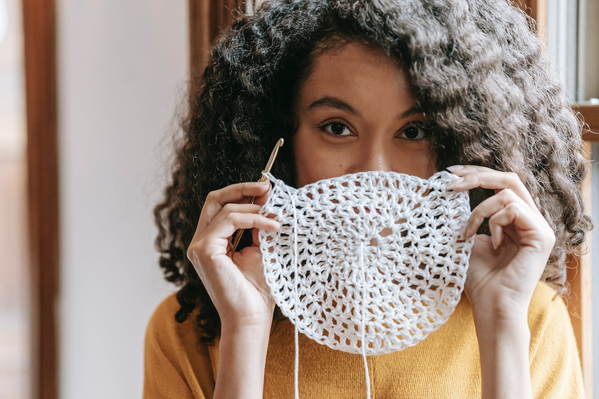
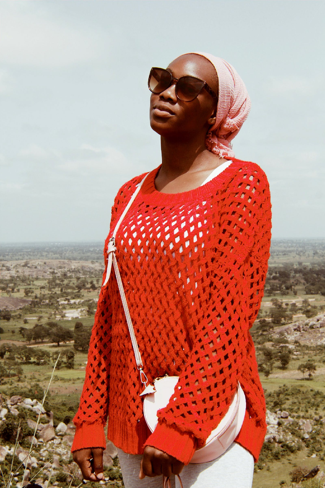
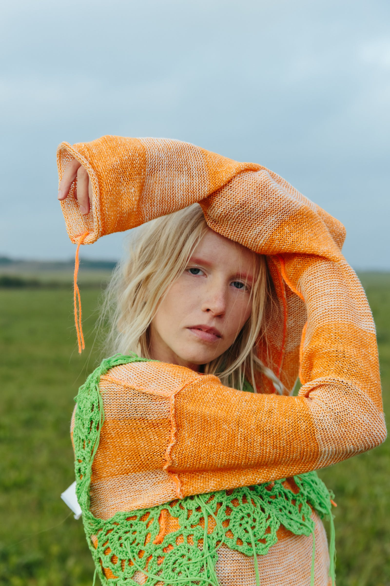
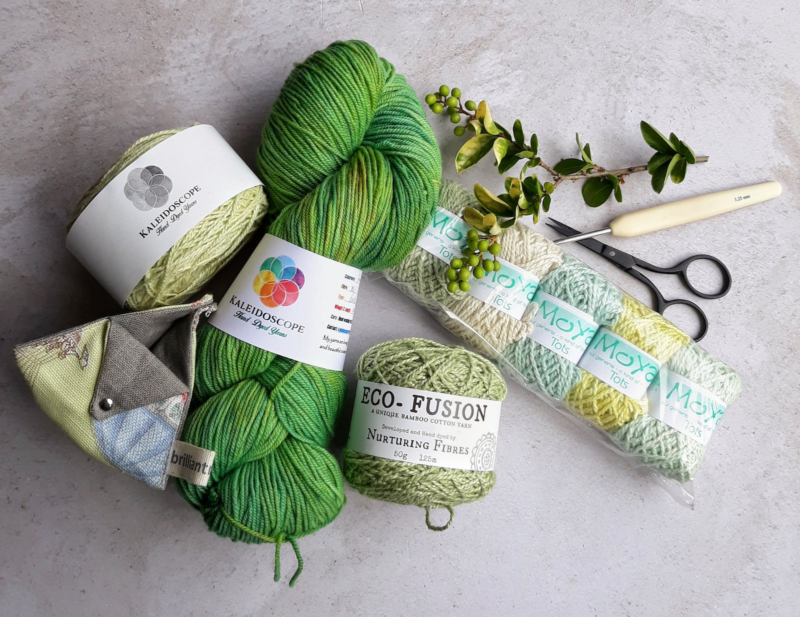
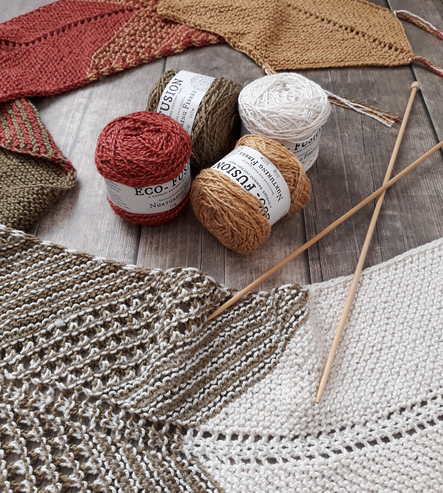
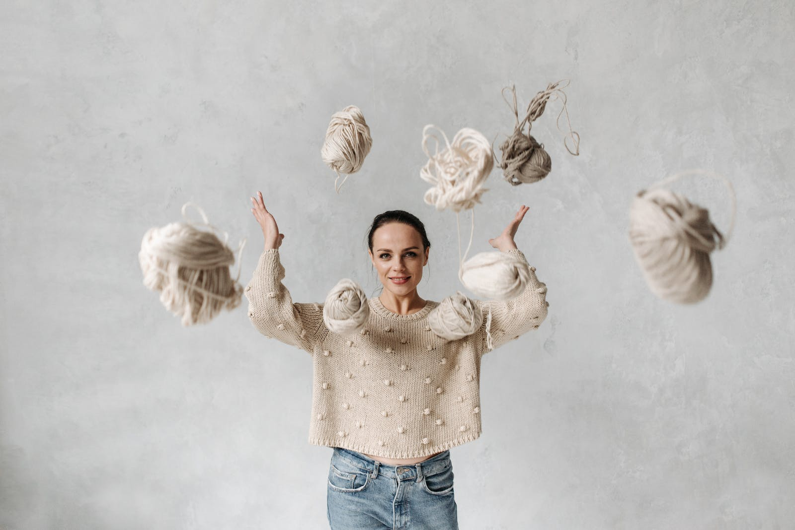

Receitas de Crochet


Crochet para todas as idades
Venha aprender a crochetar conosco!



Peças lindas feitas por você
Tenha todos os materiais necessários para seu trabalho.


Encontre o material pertinho de você
Dos mais iniciantes até os mais avançados.
Receitas com gráficos para facilitar a sua vida.
Esse site é pra você, crocheteire de plantão

Quer aprender técnicas que sua avó fazia?
É gratuito, clica no link!